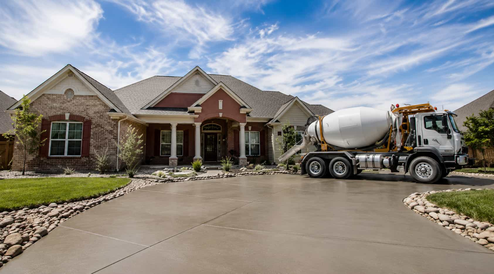

Share Details
Describe the concrete surface, project type, condition, and timeline.
StartHOMEOWNER FEEDBACK
SlabWay gives homeowners a simple way to describe a concrete project and review local provider options before deciding which path feels right.
ABOUT SLABWAY
SlabWay is an independent concrete service matching platform created to help homeowners compare local provider options for driveways, patios, slabs, repairs, stamped concrete, sidewalks, and walkways. The platform helps users describe their project clearly before reviewing possible concrete service paths.
Describe the concrete surface, project type, condition, and timeline.
StartChoose driveways, patios, slabs, repairs, stamped finishes, or walkways.
ServicesSubmit one simple request path with your concrete project notes.
SendReview possible local provider options, quotes, and project-fit details.
CompareYou choose the provider path. SlabWay does not perform concrete work.
BeginPLATFORM BENEFITS
SlabWay helps homeowners shape a clearer concrete request before reviewing local provider options. The platform is built for better context, easier comparison, and more confident project planning.

COMMON QUESTIONS
Learn how SlabWay helps homeowners describe concrete projects, compare local provider options, and understand the request process before choosing a service path.